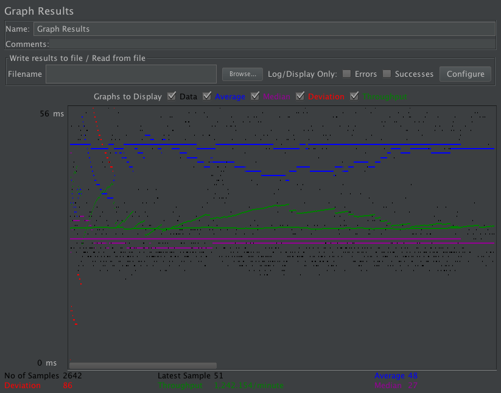

| Single-instance version cases |
Graph Results Screenshot |
Average Query Time(ms) |
Average Search Servlet Time(ms) |
Average JDBC Time(ms) |
Analysis |
| Case 1: HTTP/1 thread |
 |
48 |
16 |
5 |
For each http request, it was done pretty quickly. The time spent in the servlet was very short. |
| Case 2: HTTP/10 threads |
|
176 |
127 |
4 |
Compared to 1 thread, the average time for the query was much longer. The time spent in the servlet was also longer |
| Case 3: HTTPS/10 threads |
|
209 |
134 |
4 |
The HTTPS took the longest for each query and time spent in the servlet. |
| Case 4: HTTP/10 threads/No prepared statements |
|
186 |
142 |
12 |
Because there are no prepared statements it spends a longer time in the JDBC. |
| Case 5: HTTP/10 threads/No connection pooling |
|
35 |
12 |
3 |
Without connection pooling, it seems that there is a lot less time spent in the servlet. |